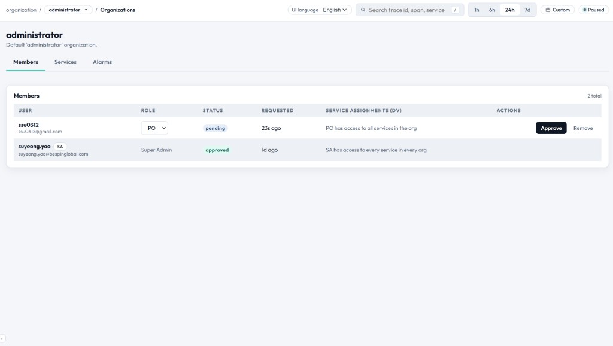

조직 — 전체 기능 매뉴얼
EasyObs는 데이터 격리, 접근 제어, 리소스 스코프 관리를 위해 멀티 테넌트 조직 모델을 사용합니다. 각 조직은 그 자체로 완결된 독립 환경입니다.

계층 구조
UI 관점: 사용자는 상단에서 조직 컨텍스트를 전환하고, 조직 스코프의 모듈에서 작업합니다. service 토큰은 Services 아래에 중첩되어 있습니다.
역할 & 권한 (RBAC)
| Role | Code | Scope | 설명 |
|---|---|---|---|
| Super Admin | SA | 인스턴스 전체 | 모든 조직과 시스템 설정에 대한 완전한 접근 권한. |
| Project Owner | PO | 조직 단위 | 해당 조직 내에서 완전한 제어 권한. |
| Developer | DV | 조직 단위 | 읽기 권한 + 제한된 쓰기 (트레이스, 라벨). |
권한 매트릭스
| Action | SA | PO | DV |
|---|---|---|---|
| 트레이스 & 세션 조회 | ✓ | ✓ | ✓ |
| 메트릭 대시보드 조회 | ✓ | ✓ | ✓ |
| 평가 결과 조회 | ✓ | ✓ | ✓ |
| 휴먼 라벨 추가 | ✓ | ✓ | ✓ |
| 평가 실행 시작 | ✓ | ✓ | ✗ |
| 프로파일 생성/편집 | ✓ | ✓ | ✗ |
| 저지 등록/편집 | ✓ | ✓ | ✗ |
| 골든 셋 관리 | ✓ | ✓ | ✗ |
| 알람 생성/편집 | ✓ | ✓ | ✗ |
| improvement 상태 관리 | ✓ | ✓ | ✗ |
| service & 토큰 관리 | ✓ | ✓ | ✗ |
| 멤버 초대/삭제 | ✓ | ✓ | ✗ |
| 조직 생성 | ✓ | ✗ | ✗ |
| 조직 삭제 | ✓ | ✗ | ✗ |
| 시스템 설정 | ✓ | ✗ | ✗ |
Services
Service는 EasyObs로 트레이스를 보내는 등록된 에이전트 애플리케이션을 의미합니다.
| 필드 | 설명 |
|---|---|
| Name | Service 표시 이름 (예: "Customer Support Agent"). |
| Slug | SDK 설정에서 사용되는 URL-safe 식별자. |
| Description | 이 service가 무엇을 하는지에 대한 설명. |
| Ingest Tokens | 트레이스 수집을 위한 인증 토큰. |
| Created | 등록 timestamp. |
Ingest Tokens
각 service는 키 로테이션을 위해 여러 ingest 토큰을 가질 수 있습니다.
- 토큰은 OTLP 요청에서
Authorization: Bearer <token>헤더로 사용됩니다. - SDK
init(token="...")에도 사용됩니다. - 여러 토큰을 만들어 무중단 로테이션이 가능합니다.
- 다른 service에 영향 없이 노출된 토큰만 폐기할 수 있습니다.
토큰 라이프사이클
- Create: PO가 "Generate Token"을 클릭 → 새 토큰이 한 번만 표시됩니다(즉시 복사하세요!).
- Active: 토큰이 인증에 유효한 상태.
- Revoke: 토큰이 비활성화되어 해당 토큰을 사용한 SDK 호출은 401 오류를 받습니다.
보안: 토큰은 생성 시점에 단 한 번만 표시됩니다. secrets manager나 환경 변수 등으로 안전하게 보관하세요. 생성 다이얼로그를 닫고 나면 다시 조회할 수 없습니다.
최초 사용자 부트스트랩
EasyObs를 빈 데이터베이스로 처음 시작하는 경우:
- 가장 먼저 가입한 사용자가 자동으로 Super Admin이 됩니다.
- SA가 첫 번째 조직을 생성합니다.
- SA가 다른 사용자를 초대하고 역할을 부여합니다.
EASYOBS_AUTO_ORG가 설정된 경우 기본 조직이 자동 생성됩니다.
조직 관리
조직 생성
- Super Admin으로 로그인합니다.
- Setup → Organizations로 이동합니다.
- "Create Organization"을 클릭합니다.
- 이름과 (선택) 설명을 입력합니다.
- 생성한 사용자가 새 조직의 PO가 됩니다.
조직 전환
- workspace 헤더에 현재 조직명이 표시됩니다.
- 조직명을 클릭하면 사용자가 속한 모든 조직 드롭다운이 열립니다.
- 다른 조직을 선택해 컨텍스트를 전환합니다.
- 모든 데이터(트레이스, 실행, 프로파일)가 선택된 조직 기준으로 다시 로드됩니다.
멤버 초대
- Setup → Members로 이동합니다.
- "Invite Member"를 클릭합니다.
- 이메일 주소를 입력합니다.
- 역할을 선택합니다(PO 또는 DV).
- Send Invite를 클릭합니다.
- 초대받은 사용자는 이메일을 받거나(또는 도메인 매칭 시 가입 즉시 자동 추가됨) 가입 후 조직에 합류합니다.
멤버 제거
- PO/SA는 Members 표에서 멤버를 제거할 수 있습니다.
- 제거된 사용자는 즉시 접근 권한을 잃습니다.
- 그들이 남긴 라벨과 어노테이션은 그대로 보존됩니다.
데이터 격리
- 트레이스는 조직 단위로 스코프됩니다 — Org A의 멤버는 Org B의 데이터를 볼 수 없습니다.
- 평가 프로파일, 저지, 골든 셋은 모두 조직 스코프입니다.
- ingest 토큰도 조직 스코프이며, 자신이 속한 조직으로만 쓰기가 가능합니다.
- Super Admin은 관리 목적상 모든 조직에 접근할 수 있습니다.
조직 설정 페이지
| 섹션 | 설명 |
|---|---|
| General | 이름, 설명, 생성일. |
| Members | 역할이 표시된 전체 멤버 표와 초대/제거 액션. |
| Services | 등록된 service와 ingest 토큰. |
| Danger Zone | 조직 삭제 (SA만 가능, 되돌릴 수 없음). |